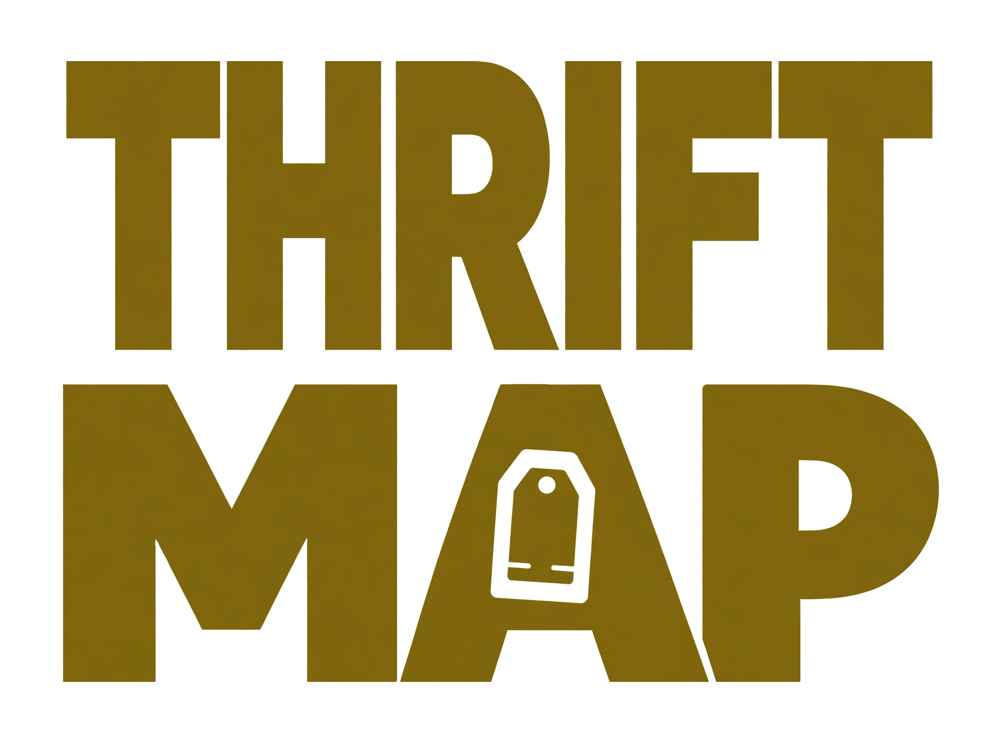
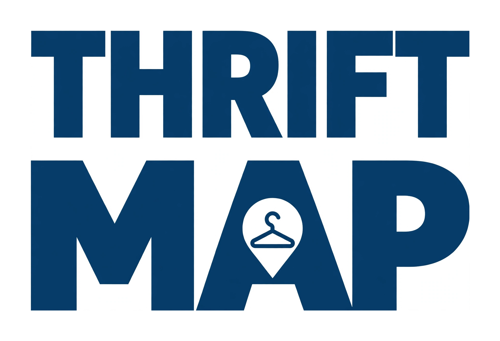
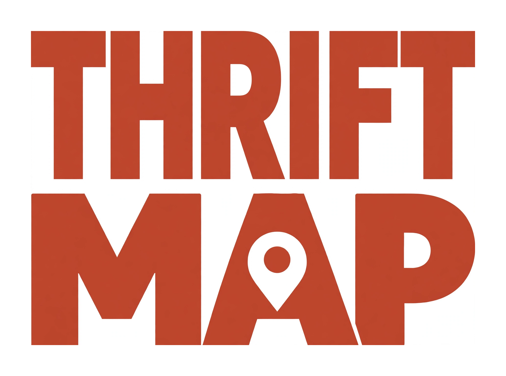
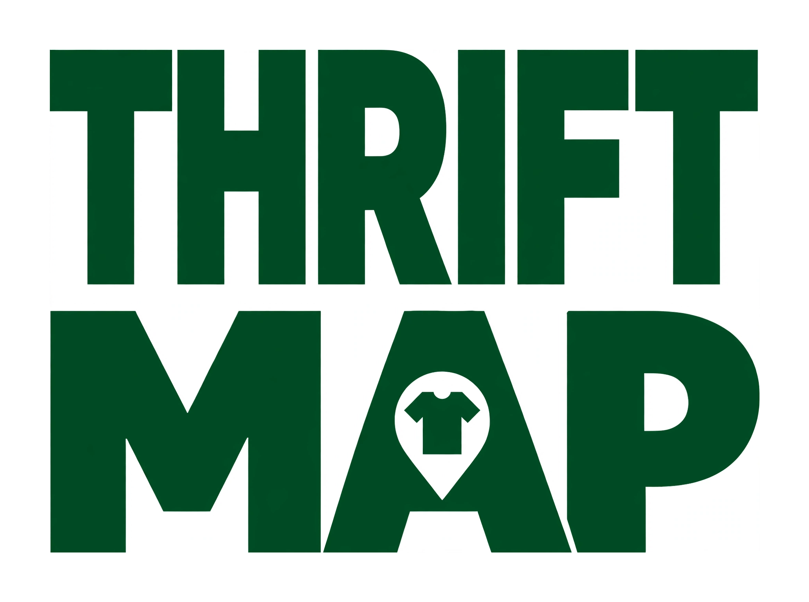
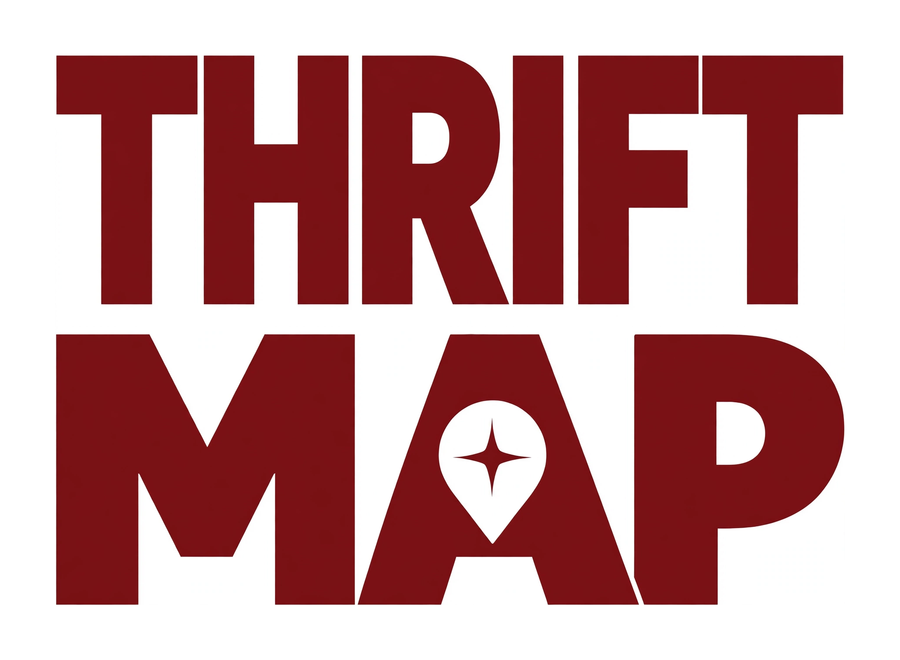

ベースは eatmap のロゴ（極太タイポ2段組）。変えたのは「A」の中に入るピンのモチーフと色だけ。各案に小サイズ表示（96px／48px幅）の確認も付けた。番号で選んでください。
値札（プライスタグ）そのものがAの中のバッジに。古着のタグ感が直球で伝わる、ヴィンテージ寄りの色。

クラシックな地図ピンの中にハンガー。ファッション特化が一目で分かる、デニムの青。

eatmap と同じクラシックなピン（中央ドット）。色だけレンガ／テラコッタに変えた正統派。

ピンの中にTシャツ。古着屋らしさと親しみやすさのある深緑。

ピンの中に四芒星のキラキラ。「掘り出し物を見つけた」感を出すワイン色。

全案とも eatmap ロゴ正本（eatmap-logo-v2）を参照して画像生成で作成。タイポは全案共通で、モチーフはAのカウンター内に収まる形。小サイズでは文字は判読可、モチーフは96px幅まで判別できることを確認済み。本採用は番号で指定してください（このボードからはページへ組み込んでいません）。